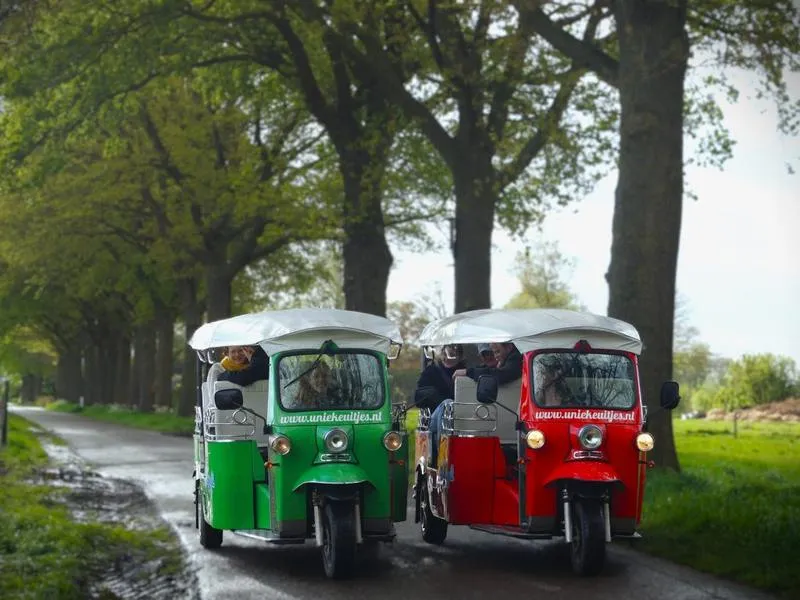
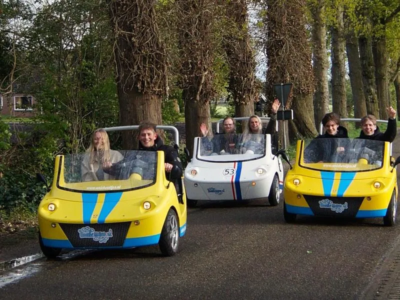

Stop walking.
Start rolling.
Van crewvervoer backstage tot artiesten en gasten op het terrein. Eventwheelz levert de voertuigen, de accu’s en de logistiek. Jij houdt je evenement in beweging.
Waar zet je Eventwheelz voor in?

Crew mobility
E-Choppers, E-Fatbikes en E-Steps zodat je crew nooit hoeft te wachten op vervoer over het terrein.

People mobility
TukTuks en Topolino's brengen artiesten en gasten comfortabel en met allure van A naar B.

Branded mobility
Onze voertuigen volledig in jouw huisstijl gewrapt, zoals we deden voor Rivella en het Mauritshuis.
Elk voertuig, een eigen taak.
Alle voertuigen worden geleverd, geplaatst en weer opgehaald.

E-Choppers
Snel en wendbaar over grote terreinen. De favoriet voor crewvervoer backstage.
v.a. € 45,- per dag
E-Fatbikes & E-Steps
Compact, stil en zonder rijbewijs te gebruiken. Ideaal voor korte ritten op het terrein.
v.a. € 35,- per dag
TukTuks
Comfortabel groepsvervoer met karakter. Perfect als pendeldienst of voor gastenvervoer.
v.a. € 330,- per dag
Topolino's
Compact en stijlvol vervoer met VIP-uitstraling. Ons meest gevraagde canvas voor een wrap.
v.a. € 125,- per dagBij elke prijs inbegrepen: WA-verzekering · 21% btw · Bezorgen en ophalen · Helmen en haarnetjes (indien van toepassing)
Nooit stilstand.
Accu wisselen, niet omruilen
Geen stilstaande voertuigen en geen administratief gedoe. We wisselen de accu en je rijdt weer door.
* alleen van toepassing op E-Choppers, E-Fatbikes en E-Steps.Standaard een reserve-accu erbij
Bij elke 5 E-Choppers, E-Fatbikes of E-Steps die je huurt leveren we 1 extra accu gratis mee.
Eigen laadstation vanaf 25 stuks
Vanaf 25 e-choppers leveren we een accukast waarmee je zelf oplaadt en doorroteert.
Bewezen op de grond.
Klaar om je event in beweging te zetten?
Vertel om wat voor evenement het gaat en wat je nodig hebt. We denken mee over de juiste mix en sturen een voorstel op maat.
info@eventwheelz.nl
Onderdeel van Unieke Uitjes